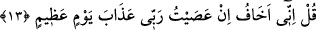
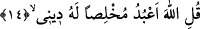
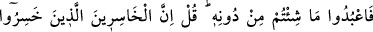
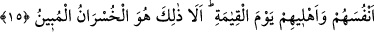

13. De ki: Rabbime karşı gelirsem, doğrusu büyük günün azâbından korkarım.
“De ki:” İhlası terk etmek ve sizin içinde bulunduğunuz şirke meyl etmek sûretiyle
“Rabbime karşı gelirsem, doğrusu büyük günün” kıyamet gününün “azabından
korkarım.” Mâsiyetlerin büyüklüğüne ve hallerin kötülüğüne göre kıyâmet gününde
olacak felâket ve korkuların büyüklüğü sebebiyle kıyâmet günü büyük gündür.
Bu ifâdede mübâlağa yolu ile mâsiyetten sakındırma vardır. Çünkü Hz. Peygamber
(a.s.) kadrinin yüceliğine rağmen isyan etmesi durumundan korkarsa, onun dışındaki
ümmeti korkmaya daha lâyıktır.
Âyet mâsıyetin ardından gelenin hemen cezâ verilmesi değil, cezâdan korkmak
olduğuna delâlet etmektedir. Çünkü, büyük küçük bütün günahların bağışlanması
mümkündür.
Sâib der ki:
Muhît/okyanus, sel üzerindeki yol tozunu yıkar.
Kişi, Hakk’ın afvı varken zillet tozundan niçin endişelenir?
14. De ki: Ben dinimde ihlâs ile ancak Allah’a ibâdet ederim.
“De ki: Ben dinimde ihlâs ile” dinimi her tür şâibeden uzak tutarak, emrolunduğum
üzere “ancak Allah’a ibâdet ederim.” O’ndan başkasına ne tek başına ne de ortak
koşmak sûretiyle ibâdet etmem.
Kâşifî der ki: “Allah için dinimi şirkten temizlerim veya amelimi riyâdan arındırırım,
demektir.”
et-Te’vîlâtü’n-Necmiyye’de der ki: “De ki: Ben dinimde ihlâs ile” dünyaya ve
ukbâya değil “ancak Allah’a ibâdet ederim.” İbâdetimle de Mevlâ’yı taleb ederim.”
Herkesin var bir isteği, dini ve mezhebi
İsteğim sizsiniz benim, aşkınızdır dinim
Aynanın arkasında istenilen yüz görülemez
Yüzünü halka döndürmüş olan sen, Allah’tan ne haber?